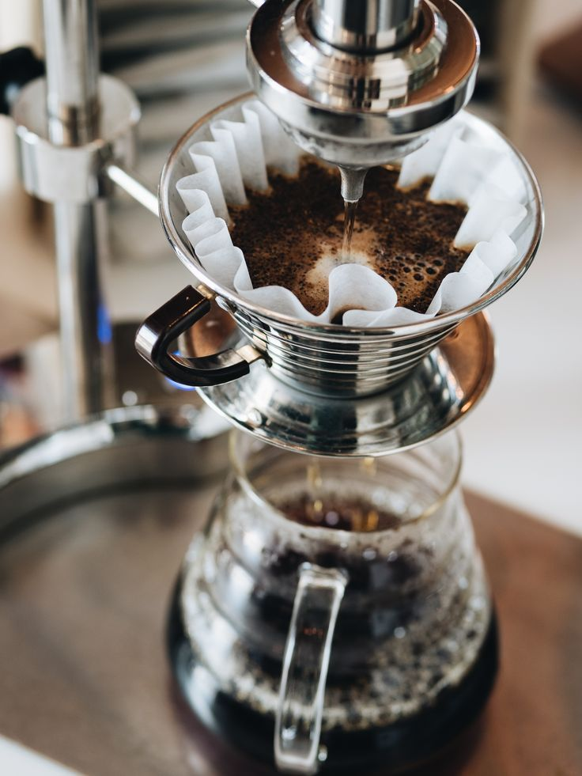

Brewing Guide
12 June 2026
How to Brew the Perfect V60 Pour-Over at Home
Our head roaster breaks down water temperature, grind size, and pour technique step by step — no fancy gear required.
Read article